Europaprojekte und Wettbewerbe
Französisch-Zertifikat DELF

DELF- das heißt Diplôme d’études en langue française. Um dieses Sprachzertifikat zu erreichen, büffeln seit 2005 regelmäßig Schüler*innen verschiedener Jahrgangsstufen nachmittags in AGs eifrig. Diese weltweit anerkannten außerschulischen offiziellen Sprachdiplome werden vom französischen Erziehungsministerium vergeben. Sie sind auf dem Arbeitsmarkt aber auch beim Studium an französischsprachigen Universitäten von großem Nutzen. Sie können auf verschiedenen Niveaus erworben werden und. Jedes Niveau schließt mit einer mündlichen und schriftlichen Prüfung ab. Für jede erfolgreich abgelegte Prüfung gibt es ein Zertifikat, das Basis ist für den Erwerb der weiteren Zertifikate. Ein einmal erworbenes Zertifikat ist von uneingeschränkter Gültigkeit. Die Prüfungen finden am Institut Franςais in Düsseldorf im Frühjahr statt.
Die Niveaus: Das DELF 1er degré, bescheinigt Grundkenntnisse des Französischen und die Fähigkeit mündlich und schriftlich in realen, alltäglichen Lebenssituationen kommunizieren zu können. Seit wenigen Jahren gibt es das DELF 1er degré in der Schüler*innenorientierten Version des DELF scolaire, bestehend aus zwei Stufen (niveau 1 und niveau 2).
Wir haben Arbeitsgemeinschaften zum Erwerb der zusätzlichen Kompetenzen zur Prüfungsvorbereitung eingerichtet. Die Zahl der Prüfungsteilnehmer*innen stieg von 24 (2005) stetig bis auf gegenwärtig über 70 an.
Italienisch-Zertifikat ele.IT
ele.IT ist eine Sprachprüfung in italienischer Sprache
für ausländische Schüler*innen und Student*innen, die italienisch
lernen und ihr Sprachniveau testen möchten.
Europäischer Referenzrahmen: Niveau B1 (s. Website).
Die Prüfung gliedert sich in 5 Teile:
Hörverstehen: Verständnis kurzer mündlicher Texte,
Leseverstehen: Verständnis kurzer schriftlicher Texte,
Alltagsitalienisch verstehen und korrekt anwenden (Pragmatische Kompetenz),Schriftliche Prüfung: Vervollständigung von Dialogen und Verfassen einer Kurzmitteilung,
Mündliche Prüfung: kurzes Gespräch.
Die Prüfung dauert 2 Stunden + 10 Min. für den mündlichen Teil. Informationen finden Sie unter www.iiccolonia.esteri.it (Rubrik „Italienisch lernen / Zertifikate“).
Exzellenzlabel CertiLingua
Die wirtschaftliche Globalisierung und die fortschreitende europäische Integration erfordern in besonderem Maße die Befähigung junger Menschen, auf hohem Niveau kompetent mit den Anforderungen sprachlicher und kultureller Vielfalt umzugehen und sich auf Mobilität im Zusammenhang mit persönlicher Lebensgestaltung, Weiterbildung und Beruf einzustellen.
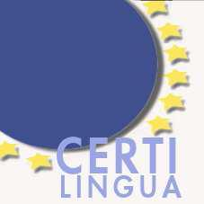 Das CertiLingua Exzellenzlabel für mehrsprachige, europäische und internationale Kompetenzen führt Schüler*innen zu sprachlicher und kultureller Vielfalt und bereitet sie zugleich auf die für ihre persönliche und berufliche Lebensgestaltung sowie für ihre weitere Bildung notwendige Mobilität vor.
Mit dem Exzellenzlabel CertiLingua werden Schüler*innen ausgezeichnet, die mit dem Abitur besondere Qualifikationen in europäischer Dimension nachgewiesen haben. Dazu gehören neben hoher Kompetenz in zwei Fremdsprachen (Niveau B2 des Gemeinsamen Europäischen Referenzrahmens) auch bilinguale Sachfachkompetenz sowie der Nachweis europäischer und internationaler Handlungsfähigkeit. Das CertiLingua Exzellenzlabel soll den Absolventen den Zugang zu international orientierten Studiengängen erleichtern und berufliche Perspektiven im europäischen und internationalen Kontext ermöglichen.
Unsere Schüler*innen, die ganz besondere Anforderungen erfüllen, können dieses Exzellenzlabel erwerben. Dazu gehört die Fortführung zweier moderner Fremdsprachen bis zum Abitur, Teilnahme am bilingualen Sachfachunterricht und an projektorientierten Austauschmaßnahmen, wie wir sie bereits mit unseren europäischen Partnerschulen praktizieren.
Das GREM gehörte zu den ersten Teilnehmern dieses Pilotprojekts in NRW. Schon 2008 haben wir vom Ministerium das Recht erhalten, CertiLingua-Label zu verleihen.
Niederländisch-Zertifikat CNaVT
 Das CNaVT (Certificaat Nederlands als
Vreemde Taal) ist ein Sprachzertifikat, welches im Rahmen des
Niederländisch-Projektkurses in der gymnasialen Oberstufe am GREM
erworben werden kann. Das CNaVT bietet offizielle und international
anerkannte Niederländischprüfungen, die verschiedenen Stufen des
Gemeinsamen Europäischen Referenzrahmens für Sprachen (GER) entsprechen.
Anhand von handlungsorientierten und kontextgebundenen Prüfungsaufgaben
in den Kompetenzbereichen Hörverstehen, Leseverstehen, Schreiben und
Sprechen zertifiziert das CNaVT die Fremdsprachenkenntnis von
Niederländisch Lernenden weltweit. Die Prüfungen werden im Auftrag der
Niederländischen Sprachunion (Taalunie) im Zentrum für Sprache und
Bildung (CTO) an der Universität KU Leuven entwickelt und werden von
unseren Schüler*innen jährlich im November hausintern abgelegt.
Am GREM wird auf die Niveaus B1 mit dem Profil FORM (Maatschappelijk
formeel) sowie B2 mit dem Profil STRT (Educatief startbekwaam)
vorbereitet.
Das CNaVT (Certificaat Nederlands als
Vreemde Taal) ist ein Sprachzertifikat, welches im Rahmen des
Niederländisch-Projektkurses in der gymnasialen Oberstufe am GREM
erworben werden kann. Das CNaVT bietet offizielle und international
anerkannte Niederländischprüfungen, die verschiedenen Stufen des
Gemeinsamen Europäischen Referenzrahmens für Sprachen (GER) entsprechen.
Anhand von handlungsorientierten und kontextgebundenen Prüfungsaufgaben
in den Kompetenzbereichen Hörverstehen, Leseverstehen, Schreiben und
Sprechen zertifiziert das CNaVT die Fremdsprachenkenntnis von
Niederländisch Lernenden weltweit. Die Prüfungen werden im Auftrag der
Niederländischen Sprachunion (Taalunie) im Zentrum für Sprache und
Bildung (CTO) an der Universität KU Leuven entwickelt und werden von
unseren Schüler*innen jährlich im November hausintern abgelegt.
Am GREM wird auf die Niveaus B1 mit dem Profil FORM (Maatschappelijk
formeel) sowie B2 mit dem Profil STRT (Educatief startbekwaam)
vorbereitet.
Erasmus plus - Projekte

Hervorragend zum Profil der Europaschule passen unsere Erasmus plus-Projekte, die wir seit 2003 durchführen. Erasmus-Projekte werden an unserer Schule sowohl für Schüler*innen als auch für Lehrkräfte angeboten. Sie gehören zu den von der Europäischen Union geförderten Bildungsprogrammen und fördern bei Schüler*innenprojekten die Zusammenarbeit mehrerer Schulen aus verschiedenen europäischen Ländern und ermöglichen bei Lehrer*innenprojekten einen europäischen Erfahrungsaustausch im Rahmen von Fortbildungsangeboten.
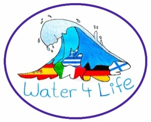
Erasmus für Schüler*innen
Eines unserer aktuellen Erasmus-Projekte für Schüler*innen „Water4Life – Sustainable use of a vital resource“, das von 2019 bis 2022 durchgeführt wird, beschäftigt sich fach- und länderübergreifend mit den verschiedenen Facetten des Themas Wassers: So stehen neben den naturwissenschaftlichen Grundlagen auch die kulturellen, wirtschaftlichen und ökologischen Aspekte des Wassers im Fokus der Projektarbeit. Folgende Schulen in Deutschland, Spanien, Italien, Griechenland und Finnland sind an diesem Projekt beteiligt:
Gymnasium Rheinkamp Europaschule Moers, Deutschland,
CCE Virgen del Pasico, Torre Pacheco, Spanien,
Istituto di Istruzione Superiore ‚L. B. Alberti‘, Abano Terme, Itlaien,
1st High School of Alimos, Alimos, Griechenland,
Hj. Nortamon Peruskoulu, Rauma, Finnland.
Projektziele und -inhalte
Die Schüler*innen der Jahrgangsstufen EF und Q1 der beteiligten Schulen erarbeiten sich in international gemischten Teams die verschiedenen Aspekte des Themas Wasser und gestalten mit den Ergebnissen verschiedene digitale Informationsprodukte wie interaktive Poster, Präsentationen, Erklärfilme etc. Inhaltliches Ziel ist die Entwicklung von Handlungsalternativen zum nachhaltigen Umgang mit der Ressource Wasser.
Insgesamt sollen neben sozialen und sprachlichen Lernzielen (Arbeitssprache ist Englisch) Kompetenzen im ICT-Bereich erweitert werden. Darüber hinaus lernen die Schüler*innen die unterschiedlichen Schulsysteme, kulturellen und sozialen Bedingungen ihrer Partnerschüler*innen, andere europäische Lebens- und Arbeitsbedingungen und Mentalitäten kennen. Es entwickeln sich europäische Freundschaften, die durch moderne Kommunikationsmittel und persönliche Kontakte gepflegt werden. Nicht zuletzt lernen die Schüler*innen sich im europäischen Ausland zurechtzufinden.
Bei den regelmäßig stattfindenden Treffen in den jeweiligen Partnerschulen haben unsere Schüler*innen Gelegenheit ihre fachsprachlichen und interkulturellen Fähigkeiten einzubringen und weiterzuentwickeln. Darüber hinaus wird in diesem Projekt ein hohes Maß an methodischen Fertigkeiten geübt und erprobt.
Durchführung
Die Schüler*innen der Oberstufe, die sich für dieses Projekt freiwillig melden, arbeiten zwei Stunden pro Woche an ihren Themen, betreut von Englisch- und Fachlehrern. Sie kommunizieren per Email, Chat und Video-Konferenzen mit ihren Partnerschüler*innen in den anderen europäischen Ländern. Regelmäßige Lehrer*innenmeetings an den beteiligten Institutionen bereiten diese Arbeit sowie die Schüler*innentreffen vor. Ein- bis zweimal pro Jahr reisen die Schüler*innen zu ihren Partnerschulen, um in gemeinsamen Workshops und auf Exkursionen ihre erarbeiteten Themen zu vertiefen.
Weitere Informationen auch zu unseren anderen Erasmus-Projekten finden Sie auf unserer Website.
Erasmus für Lehrkräfte
Unser aktuelles Erasmus plus-Projekt ‚Teaching Digital Europe - Digitalisierung in Schule und Unterricht‘ bietet den Lehrkräften unserer Schule die Möglichkeit, sich im europäischen Ausland im Bereich ICT weiterzubilden, um sich selbst, den Unterricht und in der Folge auch die Schüler*innen fit für zukünftige digitale Herausforderungen zu machen. Des Weiteren steht ein allgemeiner Erfahrungsaustausch zwischen Kolleg*innen verschiedener europäischer Länder und Schulsysteme im Fokus einer jeden Fortbildung.
Die allgemeinen Ziele unseres Projektes sind:
Verbesserung der allgemeinen Unterrichtsqualität mit nachhaltiger Entwicklung unserer Schule,
Verstärkte und sichere Nutzung digitaler Medien im kreativen, schüler- und zukunftsorientierten Unterricht,
Stärkung unseres MINT- und bilingualen Bereiches durch Digitalisierung,
Stärkung der Interkulturalität und der Europaausrichtung unserer Europaschule.
Forschen und Entwickeln
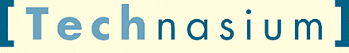 Die Nachfrage der Betriebe im grenznahen niederländisch-deutschen Raum nach besser ausgebildeten Schulabgängern im technisch-naturwissenschaftlichen Bereich ließ die Provinz Groningen 2004 die Stiftung Technasium (www.technasium.nl) gründen, um die Idee der Einbringung von Forschung und Entwicklung in Schulen des Grenzraumes voranzutreiben. Im Jahr 2007 wurden auch deutsche Schulen im Rahmen von InterReg-Partnerschaften in Planungen mit einbezogen.
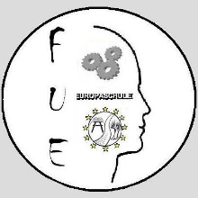 Forschen und Entwickeln (FuE) ist am GREM als weiteres Fach im Wahlpflichtbereich II eingerichtet worden. Damit soll die naturwissenschaftlich-technische Bildung verstärkt werden und durch die Zusammenarbeit mit ortsnahen Betrieben und Universitäten Einsichten in die Anforderungen der technisch orientierten Berufswelt und der zugehörigen Studiengänge vermittelt werden.
Projektziele
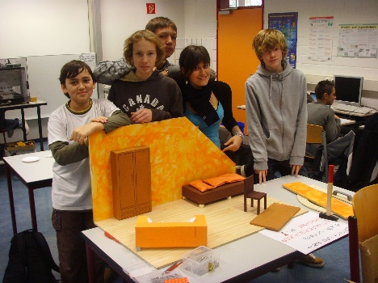 Die Schüler*innen arbeiten in kleinen Gruppen an natur-wissenschaftlich-technischen Projekten, also praxisorientiert, problemlösend, kooperativ und projektbezogen. Die „Forschungsaufträge“ bekommen die Schüler*innen von den Partnerbetrieben, den Partneruniversitäten, öffentlichen Einrichtungen oder Ausrichtern von Wettbewerben. Sie erstellen Modelle oder Softwarelösungen und präsentieren ihre Ergebnisse in Projektmappen und in Vorträgen im Kurs und bei den Auftraggebern. Erkundungen von Betrieben und Berufsbildern gehören zu den Projektanforderungen. Die Nutzung des Computerraumes, des Internets und des neuen Technikraumes ist selbstverständlich.
Das Interesse bei den Schüler*innen ist sehr groß, die Nachfrage bei den Wahlen am Ende der Klasse 7 übersteigt regelmäßig bei weitem das Angebot.
Zukunft durch Innovation (zdi)
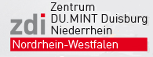 Auch in diesem Projekt zeigt sich der MINT-Schwerpunkt des GREM. 2009 wurde in der Universität Duisburg durch das Innovationsministerium das zdi-Zentrum „DU.MINT Duisburg Niederrhein“ eröffnet. Das Projekt der Gemeinschaftsoffensive Zukunft durch Innovation (zdi) bietet Schüler*innen weiterführender Schulen an vier Standorten in Duisburg und Moers Angebote rund um die Themen Mathematik, Informatik, Naturwissenschaften und Technik (MINT). Dazu gehören beispielsweise ein Nano–Schüler*innenlabor, ein mobiles Elektrotechniklabor, Mathematik-Projektwochen sowie MINT - Workshops speziell für Mädchen. Ziel ist es, mit Angeboten im Schulunterricht und darüber hinaus Begeisterung für naturwissenschaftlich-technische Berufe zu wecken und Talente gezielt zu fördern. Die Schüler*innen haben in der Universität die Möglichkeit, unter Forschungsbedingungen praxisnah zu experimentieren. So kann ihr Interesse an Naturwissenschaft oder Technik nachhaltig bis zur entsprechenden Berufswahl ausgebaut werden. Damit kann frühzeitig dem drohenden Fachkräftemangel in der Region entgegengewirkt werden.
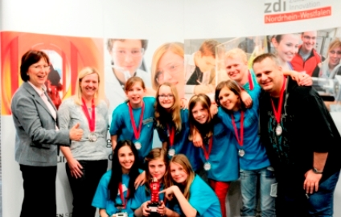 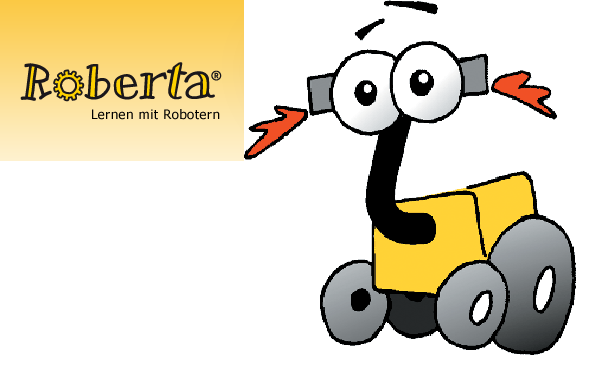 Träger des zdi-Zentrums DU.MINT Duisburg Niederrhein ist die Universität Duisburg-Essen. Unterstützt wird das Zentrum von der Stadt Duisburg und Partnern aus der Wirtschaft. Mehrere Schulen aus Duisburg und vom Niederrhein sind in das zdi-Zentrum als Standorte eingebunden. Am GREM wird die besondere MINT-Förderung beispielsweise durch das Projekt „Forschen und Entwickeln“ und die Teilnahmen am Nano-Schüler*innenlabor und dem Wettbewerb freestyle-physics betrieben.
Seit Oktober 2010 sind wir zusätzlich Roberta-Zentrum und bieten vom Fraunhofer-Institut zertifizierte Roboter-Lehrgänge, vor allem für Mädchen, an. Inzwischen können wir einige Erfolge bei Roboter-Wettbewerben verbuchen.
Mathematik-Wettbewerbe
Die Mathematik-Olympiade ist ein seit 1962 jährlich bundesweit angebotener Wettbewerb, an dem über 125.000 Schüler*innen teilnehmen. Die Mathematik-Olympiade bietet allen interessierten Schüler*innen die Möglichkeit, ihre besondere Leistungsfähigkeit auf mathematischem Gebiet unter Beweis zu stellen. Der nach Altersstufen gegliederte Wettbewerb für die Klassen 3 bis 13 erfordert logisches Denken, Kombinationsfähigkeit und kreativen Umgang mit mathematischen Methoden. Die Teilnahme am Wettbewerb regt häufig zu einer weit über den Unterricht hinausreichenden Beschäftigung mit der Mathematik an. In den unteren Klassenstufen dominiert als Motiv oft der Spaß am rational-logischen Denken. Bei den Älteren besteht das Interesse dagegen mehr darin, eigene mathematische Fähigkeiten an der Bearbeitung anspruchsvoller Aufgaben zu erproben, zu festigen und weiterzuentwickeln.
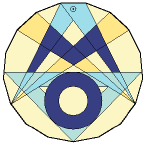
Mathe-Känguru (Känguru der Mathematik)
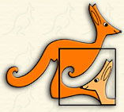
Dies ist ein mathematischer Multiple-Choice-Wettbewerb für mehr als 5,5 Millionen Teilnehmer in vielen europäischen und außereuropäischen Ländern. Er findet einmal jährlich im März in allen Teilnehmerländern gleichzeitig freiwillig schriftlich unter Aufsicht statt. Das Ziel ist die Unterstützung der mathematischen Bildung an den Schulen, er soll die Freude an der Beschäftigung mit Mathematik wecken und festigen und durch das Angebot an interessanten Aufgaben die selbstständige Arbeit und die Arbeit im Unterricht fördern soll
Der Wettbewerb hat stetig wachsende Teilnehmerzahlen: in Deutschland sind sie von 184 im Jahr 1995 auf über 800.000 im Jahre 2009 gestiegen.
Die Mathematik-Wettbewerbe werden von unserer Wettbewerbs-Beauftragten und von der Fachschaft Mathematik betreut. Wir werben für die Teilnahme, weil in der Vorbereitung wichtige Kompetenzen, die in den zentralen Prüfungen abgefragt werden, geschult werden. Die Zahl unserer Teilnehmer*innen nimmt in den letzten Jahren stetig zu.
Die besten Preisträger werden traditionell am letzten Schultag in einer Ehrungszeremonie besonders ausgezeichnet.[]{#BigChallenge .anchor}
Englisch-Wettbewerb The Big Challenge
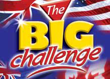 The Big Challenge ist ein Englischwettbewerb für Schüler*innen zwischen 11 und 16. Er wird jedes Jahr im Mai in Schulen in Frankreich, Deutschland und Spanien durchgeführt. 1999 wurde der Wettbewerb von Englischlehrern in Frankreich ins Leben gerufen, um Schüler*innen einen besonderen Motivationsschub zu geben Sprachen zu lernen.
Im Jahr 2019 nahmen über 590000 Schüler*innen mit 28000 Lehrer*innen aus 5500 Schulen teil. Das GREM beteiligt sich seit einigen Jahren mit ständig wachsender Schüler*innenzahl.
Debating Club
Teilnahme am Model European Parliament und der Model United Nation School Simulation
Schüler*innen der Klasse 9 bis 12 (Q2) können im Debating Club ihre kommunikativen und rhetorischen Fähigkeiten erweitern, vertiefen und unter Beweis stellen, indem sie spannende aktuelle politische Themen auf Englisch diskutieren. Sie werden mit der formal debate vertraut gemacht, die in der englischsprachigen Welt eine lange Tradition und hohes Ansehen genießt. Die AG wendet sich besonders an sprachbegabte und politisch interessierte Schüler*innen, so dass sie einen wichtigen Beitrag zur Exzellenzförderung am GREM leistet.
In zwei großen politischen Planspielen können die Schüler*innen dann jedes Jahr ihre Debattierkenntnisse und Fähigkeiten in professioneller Umgebung ausprobieren. Im März findet die Model United Nation School Simulation auf Schloss Neersen statt, in der die Schüler*innen in die Rolle von Abgeordneten der Vereinten Nationen schlüpfen und Lösungsansätze zu aktuellen globalen Themen diskutieren.
Des Weiteren nehmen sie als Abgeordnete am international besetzten Model European Parliament in Kerkrade, Niederlande, teil. Hier können die Jugendlichen, gekleidet in Anzug und Businesslook, ein ganzes Wochenende erleben, wie Politik funktioniert, wie politische Entscheidungen zustande kommen und was es heißt, vor großem Publikum zu sprechen. Insbesondere hier erfahren die Schüler*innen in europäischen Dimensionen zu denken und was es bedeutet, in einer europäischen Staatengemeinde mit gemeinsamen Idealen und einer gemeinsamen Geschichte zu leben und zu agieren.
Der Debating Club leistet daher einen wichtigen Beitrag für das Europakonzept unserer Schule.